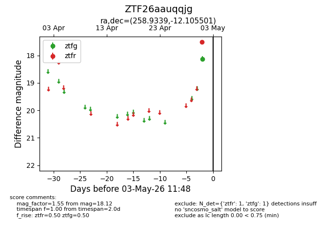
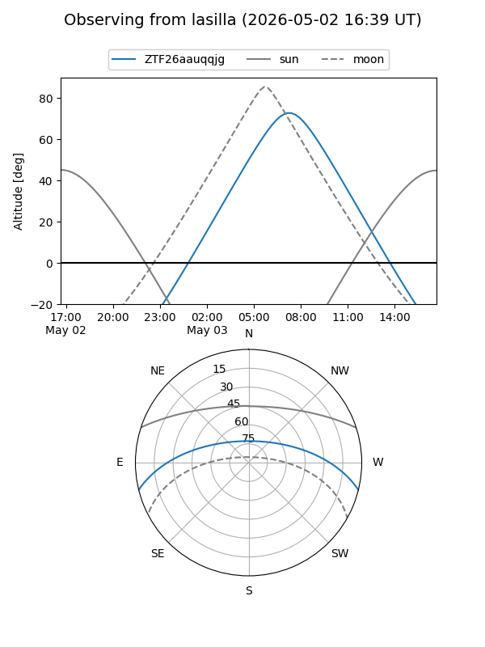
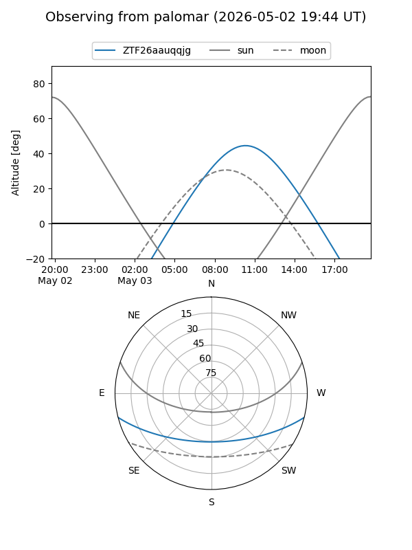

ZTF26aauqqjg
Target ZTF26aauqqjg at 2026-05-03 12:02
Aliases and brokers:
FINK: link
Lasair: link
ALeRCE: link
alt names
ZTF26aauqqjg (ztf,fink_ztf)
Coordinates:
equatorial (ra, dec) = 258.9339,-12.10550
equatorial (HMS+DMS) = 17:15:44.13,-12:06:19.80
galactic (l, b) = (10.5825,+14.90893)
Flags:
Photometry:
last ztfg=18.12, ztfr=17.51
1 ztfg, 1 ztfr detections
Lightcurve

Visibility


Additional plots